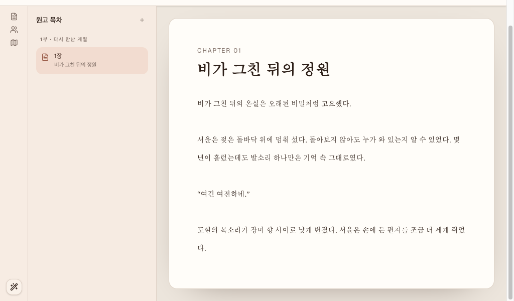

같은 탭을 새로고침하자 저장 표식 없이 revision 1의 seed 본문으로 돌아온 화면.
중복된 관찰
ticket-worker #1 집필 에디터 스크롤 경계 수정과 중복: 1024x600 clean reload 2회 모두 기본 본문에서 document.documentElement.scrollHeight=652, viewport 높이 600을 기록했다. 문서를 아래로 52px 스크롤하면 header top이 -52px로 이동했다. 80개 문단의 긴 고유 원고에서는 document scroll height가 6,046px까지 늘었다. 이는 #1 설계의 “문서 전체가 아니라 중앙 에디터만 스크롤” 요구와 같은 결함이므로 새 티켓을 만들지 않았다.

1024x600 두 번째 clean reload에서 문서 전체를 52px 스크롤한 중복 증거.
제외한 관찰
확정 기준에 미달한 결함 후보는 없었다. 인위적으로 manuscript PUT을 실패시킨 경우에는 저장 실패 alert와 이름 있는 원고 저장 다시 시도 버튼이 나타났고, 네트워크 회복 뒤 재시도는 최신 원고를 보존하며 성공했다. 선택 범위 교체, 빈 입력 저장, 저장 중 추가 편집 직렬화, 모바일 sheet의 Escape 닫기 역시 요구 범위에서 정상 동작하여 버그로 등록하지 않았다.
수행한 검사
정상 편집: 즉시 편집 중, 800ms 전 PUT 없음, 이후 PUT 200과 자동 저장됨.
지연 저장: 저장 중을 확인했고, 진행 중 추가 편집은 첫 요청 body와 분리되어 두 번째 revision 저장으로 직렬화됨.
실패·회복: fetch 실패에서 원고 유지, alert 및 labelled retry 노출, 회복 후 저장 성공.
선택 범위: 본문 0..2의 비가를 선택으로 키보드 교체한 뒤 자동 저장 성공.
반응형: 390x844에서 가로/문서 세로 overflow 없음, context sheet가 열리고 Escape로 닫힘. 1440x900에서 문서 높이 900 유지.
스크롤: 1024x600에서 기존 #1과 같은 문서 overflow를 clean reload 2회 확인하고, 80개 문단의 긴 원고에서 document 높이 6,046px를 기록.
콘솔: Vite/MSW 정보 로그와 요청 로그 외 제품 오류 없음.
zellij-agent ticket-worker list --json: 기존 ready 티켓 #1과 중복 비교.
.codex/agents/tests/validate-bug-hunter.sh 통과.
Vitest 전체 28개 파일, 235개 테스트 통과. jsdom의 기존 Window.scrollTo() 미구현 진단만 출력됨.
mise exec -- pnpm check 통과: format, lint, typecheck, test 모두 성공.
mise exec -- pnpm build 통과: 2,087 modules transformed.
제약 및 미확인 항목
개발 모드 MSW만 사용했으며 실제 backend persistence와 충돌 modal은 이번 흐름에서 검증하지 않았다. 5173의 기존 프로세스는 건드리지 않고 별도 5174 서버를 사용했다. 실제 OS 보조기술의 음성 출력은 확인하지 않았고 DOM role·accessible name·focus 이동으로 점검했다. 제품 코드와 기존 문서는 수정하지 않았다.